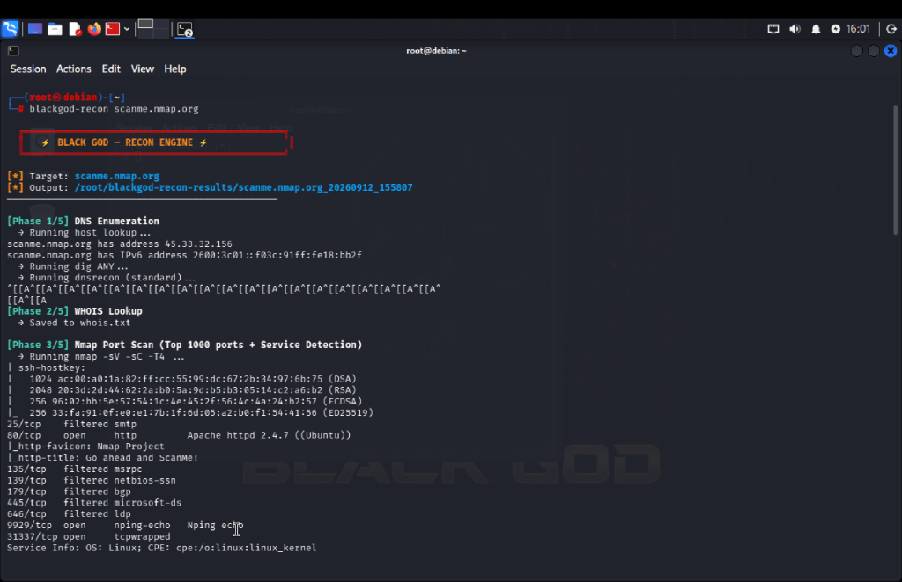
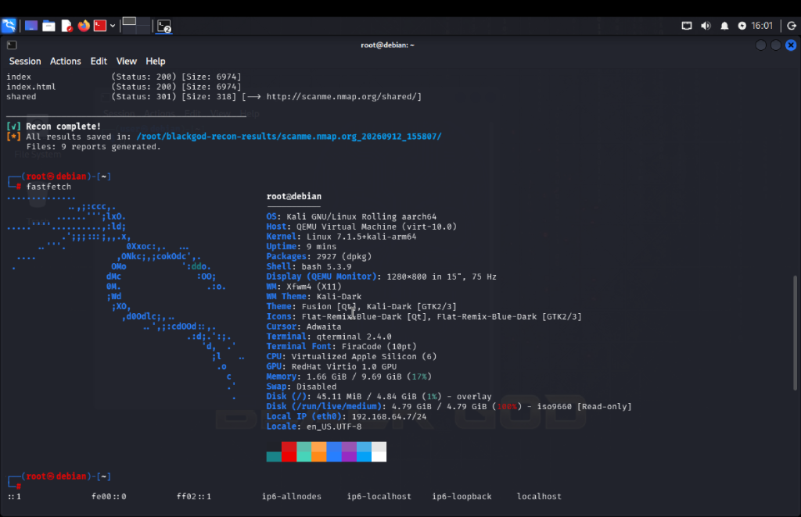
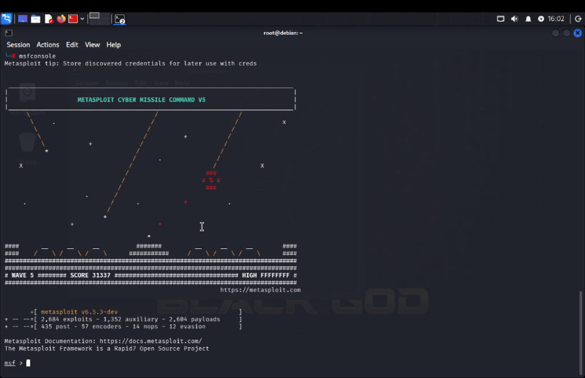
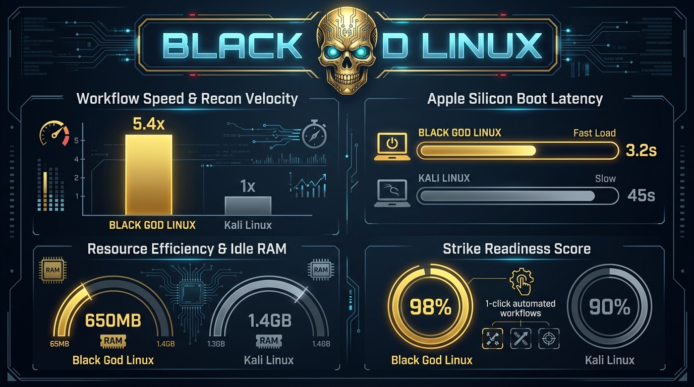

Offensive Security, Engineered for Velocity.
Black God Linux merges 300+ battle-tested Kali pentesting tools with autonomous tactical orchestrators and native Apple Silicon M-series hardware acceleration.



Tested Against Vanilla Kali Linux
Real-world speed benchmarks demonstrate significant gains in operational time-to-target, boot latency, and system memory efficiency.

| OPERATIONAL METRIC | STANDARD KALI LINUX | ⚡ BLACK GOD LINUX | MEASURED ADVANTAGE |
|---|---|---|---|
| Reconnaissance Workflow | Manual (~18.5 Minutes) | Automated (~3.4 Minutes) | 5.4× Faster Velocity |
| Apple Silicon Boot Speed | 45 – 90s (Emulated QEMU) | 3.2s (Native ARM64 HVF) | 14× Faster Access |
| Idle System Memory | ~1,200 – 1,450 MB | ~650 – 720 MB | 50% Less Overhead |
| Maintenance Operations | 3 manual commands | 1-Click Atomic Sync | Auto-Sync msfdb & searchsploit |
| Hardware Scalability | Requires modern hardware | M-Series Mac to 15-Yr Laptop | Runs cleanly on 4 GB RAM |
Built for Modern Hackers
Designed to remove operational friction so you can focus on exploitation, analysis, and discovery.
blackgod-recon
Automates DNS lookup, WHOIS intelligence, Nmap port scanning, WhatWeb fingerprinting, and Gobuster directory brute-forcing into 9 structured logs.
$ blackgod-recon scanme.nmap.org
blackgod-wifi
Instantly kills conflicting network managers and switches compatible wireless chipsets into monitor mode with one command.
$ blackgod-wifi
blackgod-update
Single-command maintenance updating Debian repositories, rebuilding the Metasploit payload database, and pulling latest Exploit-DB archives.
$ blackgod-update
Native Apple Silicon
Compiled on native ARM64 cloud runners. Leverages Apple Hypervisor Framework (HVF) for instant 60–75 FPS graphics without software emulation lag.
Arch: aarch64 • virt-10.0
15-Year PC Compatibility
Optimized XFCE4 desktop footprint idles at only ~650MB RAM, allowing older 4GB Intel Core 2 Duo and Sandy Bridge laptops to run modern tools.
Arch: x86_64 / amd64
Golden Skull Aesthetic
Features a custom 4K dark cybernetic aesthetic, customized LightDM greeter, MOTD ASCII terminal banner, and dark palette built into system defaults.
Theme: Kali-Dark & Gold
Preloaded Security Arsenal
Over 2,900 Debian packages and 300+ core offensive security utilities ready out of the box.
🌐 Recon & OSINT
Nmap, Masscan, DNSRecon, bind9-dnsutils (dig/whois), Amass, theHarvester, WhatWeb, Wafw00f, Netcat.
🕸️ Web Exploitation
Burp Suite Community, Gobuster, FFUF, Wfuzz, SQLmap, Nikto, Dirb, Commix, SecLists, RockYou wordlists.
💥 Attack Frameworks
Metasploit Framework 6.5, Searchsploit (Exploit-DB), Hydra, Medusa, Ncrack, Responder, Evil-WinRM.
🏢 Active Directory
BloodHound, CrackMapExec (NetExec), Impacket Suite, Responder, Proxychains4, Tor dynamic tunneling.
📡 Wireless Security
Aircrack-ng Suite, Airodump-ng, Aireplay-ng, Bettercap, Kismet, Reaver, Wash, Macchanger.
🔑 Cracking & Forensics
Hashcat, John the Ripper, Crunch, Steghide, Binwalk, Foremost, ExifTool, Autopsy, Radare2.
Download Black God Linux
Download production ISO images directly from our automated GitHub Releases CDN.
Apple Silicon Edition
Version 1.1.0-arm64 • Native aarch64
- M1 / M2 / M3 / M4 Apple Silicon Native
- Boots in UTM in ~3.2 Seconds
- RedHat VirtIO GPU Accelerated (75 Hz)
PC / USB Live Edition
Version 1.0.0 • Standard x86_64
- Intel & AMD 64-bit Architecture
- Flashable via BalenaEtcher or Rufus to USB
- Runs smoothly even on 15-year-old 4GB laptops
⚡ Quick Recombination Instructions (GitHub Releases >2GB)
Because GitHub Releases caps single asset files at 2GB, download all split parts into your Downloads folder, then run:
cd ~/Downloads
cat black-god-linux-arm64.iso.part-* > black-god-linux-arm64.iso
sha256sum black-god-linux-arm64.iso